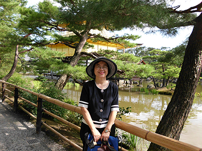
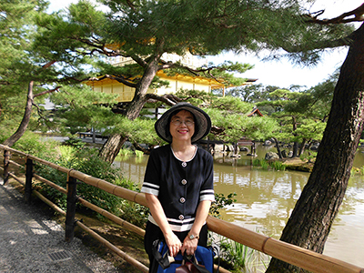

聯絡資訊
| 役 職 ： | 国立政治大学教育学科教授 |  |
| 住 所 ： | 116 臺北市文山區指南路二段64號 國立政治大學教育系 | |
| 電 話 ： | 02-29393091*88007 | |
| FAX： | 02-29396823 | |
| E-mail： | iaezcpc@nccu.edu.tw |
| 役 職 ： | 国立政治大学教育学科教授 |  |
| 住 所 ： | 116 臺北市文山區指南路二段64號 國立政治大學教育系 | |
| 電 話 ： | 02-29393091*88007 | |
| FAX： | 02-29396823 | |
| E-mail： | iaezcpc@nccu.edu.tw |
1992 カリフォルニア 大学 ロサンゼルス校(UCLA) 博士号取得後研究
1987-1992 カリフォルニア 大学 ロサンゼルス 校にて比較及び国際研究所
2007－現在 国立政治大学教師会会長 台湾競争力フォーラム教育部門議長
2006－現在 教育改革総合健康診断フォーラム執行秘書
2001－2002 国立政治大学 - - 性別 - - 平等委員会議長